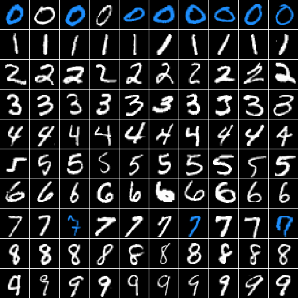

2 minutes
Can ChatGPT Recognize Handwritten Digits?
TLDR: No. No it cannot.
This was admittedly a fairly stupid experiment on the face of it. ChatGPT is a decoder-only model. It shouldn’t be able to perform an image recognition task. But then again, a decoder-only model wouldn’t have been my first choice for translation or summarization either. In my experience, ChatGPT has created translations which are at least as coherent and idiomatic as Google Translate, if not more so.
So I thought, why not give it a shot?
Process
MNIST is a computer vision dataset containing thousands of handwritten digits along with their actual labels. Images are represented as 28x28 tensors where each element of the tensor represents a intensity pixel intensity between 0 and 1. Traditionally this is formulated into a classification problem, with the goal of choosing the correct class out of the 10.
To simplify the input, I flattened the tensor and translated the pixel intensity values to the range 0-10. This allowed me to use fewer tokens at the expense of some of the gradations between light and dark.
I gathered 10 random examples from each of the 10 classes (100 total images) and fed them into gpt-3.5-turbo with the following prompt:
The following is a flattened representation of an image of a handwritten digit. The image was 28x28 but has been flattened to 1x784. Each number represents a pixel intensity from 0-10. Please tell me which digit the following pixel list represents:
Followed by the list of 784 pixel intensities.
Results
ChatGPT scored 11/100. Barely better than guessing. A summary of the sessions can be found at this gist. A visual summary is below, with the blue signifying correct guesses.
Note: although the image shows the digits sorted, they were prompted in random order.

It is interesting that only the 0s and the 7s were correctly identified. Let’s take a look at the distribution of ChatGPT’s guesses.
| Guess | Count |
|---|---|
| 0 | 85 |
| 1 | 0 |
| 2 | 3 |
| 3 | 1 |
| 4 | 1 |
| 5 | 4 |
| 6 | 1 |
| 7 | 5 |
| 8 | 0 |
| 9 | 0 |
Oh. It got 8/10 zeros correct because it guessed zero 85% of the time.